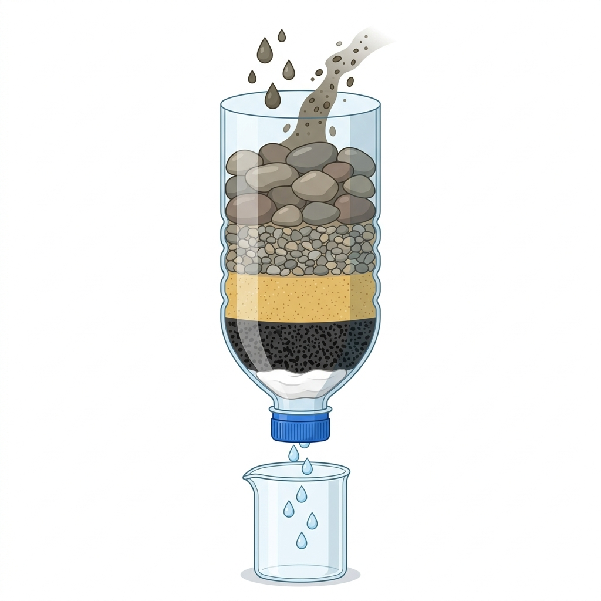

Rancang Bangun Alat Penyaring Air Sederhana
Sebuah dokumentasi proyek eksperimen Kelas X SMA Negeri untuk memecahkan krisis air bersih menggunakan media filtrasi alami secara terstruktur dan ilmiah.

Primastuti Dewi
Kelas X-A SMA
"Air bersih adalah komponen vital bagi seluruh kehidupan. Mengurangi pencemaran air adalah tanggung jawab rekayasa kita bersama."
Latar Belakang Proyek
Krisis ketersediaan air bersih merupakan isu lingkungan hidup yang krusial. Banyak sumber air permukaan tercemar lumpur, pasir, dan zat organik sehingga keruh serta berbau.
Melalui rekayasa filtrasi fisik, kita dapat membersihkan air tersebut secara mekanis menggunakan material berpori di sekitar kita.
Komponen Alat & Bahan (Engineering)
Berikut adalah komponen yang dipersiapkan untuk merakit casing dan media penyaring air:
1. Botol Plastik
Ukuran 1.5 Liter sebagai wadah susunan filter.
2. Kapas Steril
Sebagai lapisan penyaring partikel halus di paling bawah.
3. Arang Aktif
Berfungsi untuk adsorpsi (menyerap bau, warna, & zat kimia).
4. Pasir Bersih
Lapisan penyaring lumpur halus dan koloid terlarut.
5. Kerikil Kecil
Penyaring kotoran berukuran sedang sebelum masuk ke pasir.
6. Kerikil Besar
Lapisan paling atas untuk menyaring sampah ukuran kasar.
Prosedur Perakitan Alat (Engineering)
Lapisan media penyaring disusun secara berurutan agar menghasilkan filtrasi optimal:
Persiapan Casing Filter
Potong bagian bawah botol plastik bekas sekitar 5 cm menggunakan cutter. Balikkan botol sehingga corong menghadap ke bawah.
Penyusunan Filter Halus
Masukkan kapas steril di posisi paling bawah botol, diikuti dengan arang aktif/karbon aktif di atasnya secara merata.
Penyusunan Media Kasar
Tuangkan lapisan pasir silika di atas arang, disusul dengan kerikil kecil, dan terakhir kerikil besar di bagian paling atas.
Pengujian Penyaring
Tuangkan air keruh dari atas botol secara perlahan dan amati kejernihan air hasil filtrasi yang keluar dari mulut botol.
Glosarium Sains
- Filtrasi
- Pemisahan fisik partikel padat dari cairan menggunakan media berpori.
- Adsorpsi
- Penyerapan zat terlarut pada permukaan media penyerap seperti arang aktif.
- Turbiditas
- Tingkat kekeruhan air akibat partikel tersuspensi seperti lumpur.
Rancangan Skema

*Sorot kursor ke gambar untuk memicu perbesaran dan rotasi skema.
Penting untuk Keselamatan Sains!
Air hasil filtrasi fisik ini hanya bersih secara visual dari lumpur, bau, dan partikel kasar. Untuk kebutuhan konsumsi, air hasil saringan wajib direbus terlebih dahulu hingga mendidih guna melumpuhkan mikroorganisme dan bakteri berbahaya.